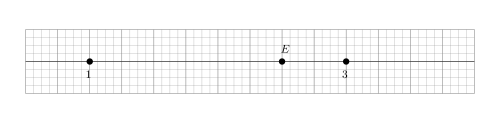
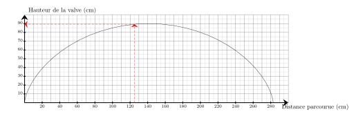

$10\,\%$ de $25$ :
$\dfrac{10 \times 25}{100} = 0{,}1 \times 25 = 2{,}5$.
Donc la valeur est 2.
02
Question
Sur chaque droite graduée, déterminer l’abscisse du point $E$. A. $\dfrac{9}{4}$
B. $\dfrac{13}{4}$
C. $2$
D. $\dfrac{5}{2}$

On remarque qu'il y a 8 divisions entre $1$ et $3$, donc chaque division vaut $\dfrac{1}{4}$.
Le point $E$ est situé après $10$ divisions à partir de l'origine.
Donc l'abscisse de $E$ est $\dfrac{5}{2}$.
Bonne réponse : D.
03
Question
Calculer l'aire d'un rectangle de longueur $5\text{ cm}$ et de largeur $2{,}4\text{ cm}$
On tire une boule au hasard dans une urne contenant $8$ boules noires et $6$ boules blanches. Quelle est la probabilité d'obtenir une boule blanche ? On donnera le résultat sous forme d'une fraction irréductible.
Dans une situation d'équiprobabilité,
on calcule la probabilité d'un événement par le quotient :
$\dfrac{\text{Nombre d'issues favorables}}{\text{Nombre total d'issue}}$.
La probabilité est donc donnée par :
$\dfrac{\text{Nombre de boules blanches}}{\text{Nombre total de boules}}
=\dfrac{6}{14} =\dfrac{3{\color{#C5607A}\boldsymbol{\times2}} }{7{\color{#C5607A}\boldsymbol{\times2}}}={\color{#8B3C52}\boldsymbol{\dfrac{3}{7}}}$
Teresa doit acheter du gazon. Sur la notice, il est indiqué de prévoir $10$ kg pour $50\text{ m}^2$. Combien doit-elle en acheter pour une surface de $250\text{ m}^2$ ?
Commençons par trouver combien de kg il faut prévoir pour $1\text{ m}^2$.
$1\text{ m}^2$, c'est ${\color{#C5607A}\boldsymbol{50}}$ fois moins que 50$\text{ m}^2$. $10$ kg $\div {\color{#C5607A}\boldsymbol{50}} = 0{,}2$ kg on a donc besoin de ${\color{#C5607A}\boldsymbol{0{,}2}}$ kg pour recouvrir $1\text{ m}^2$. Cherchons maintenant la quantité de kg nécessaire pour recouvrir $250\text{ m}^2$. $250\text{ m}^2$, c'est ${\color{#C5607A}\boldsymbol{250}}$ fois plus que $1\text{ m}^2$. ${\color{#C5607A}\boldsymbol{0{,}2}}$ kg $\times {\color{#C5607A}\boldsymbol{250}} = 50$ kg Teresa aura besoin de ${\color{#8B3C52}\boldsymbol{50}}$ kg pour recouvrir $250\text{ m}^2$.
03
Question
Donner le nom du solide suivant :
Pyramide avec une base ayant $8$ sommets.
04
Question
Voici une série de 4 notes : $10, 6, 14, 8$.
Quelle est la moyenne de cette série ?
A. $7{,}5$
B. $9{,}5$
C. $8{,}5$
D. $10$
La moyenne de cette série est :
$$
\frac{10+6+14+8}{4}=\frac{38}{4}=9{,}5.
$$
Bonne réponse : B.
01
Question
Compléter le tableau en mettant oui ou non dans chaque case. $$\begin{array}{|l|c|c|c|c|}
\hline
\text{... est divisible} & \text{par }2 & \text{par }3 & \text{par }5 & \text{par }9\\
\hline
1\,635 & & & & \\
\hline
\end{array}$$
Sur le graphique ci-dessus, on a représenté la hauteur de la valve d'une roue de vélo en fonction de la distance parcourue en $\text{cm}$ lors d'un tour complet. Quelle est la hauteur de la valve lorsque la distance parcourue est de $125\text{ cm}$ ?
La hauteur de la valve lorsque la distance parcourue est de $125\text{ cm}$ est de $89\text{ cm}$.

03
Question
Un concours dure $470$ minutes. Quelle est sa durée en heures et minutes ?
Une heure contient 60 minutes.
$470=420+50=7\times 60+50$, donc dans $470$ minutes il y a 7 h 50 min.
04
Question
Laquelle des 4 figures ci-dessous va être tracée avec le script fourni ?